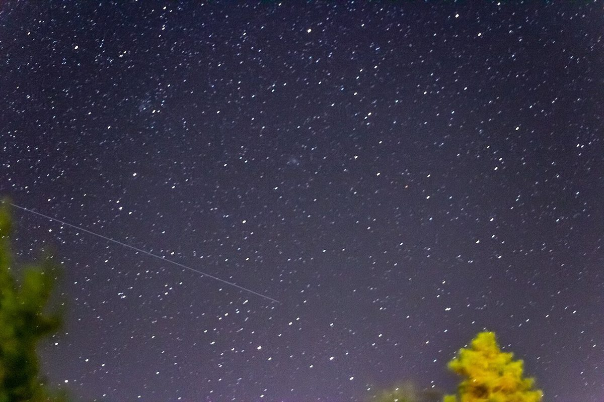
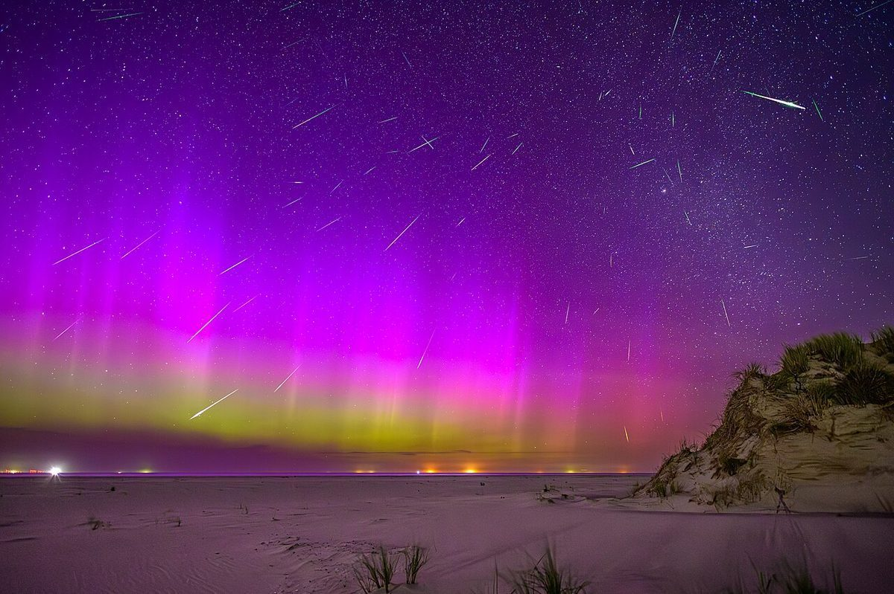
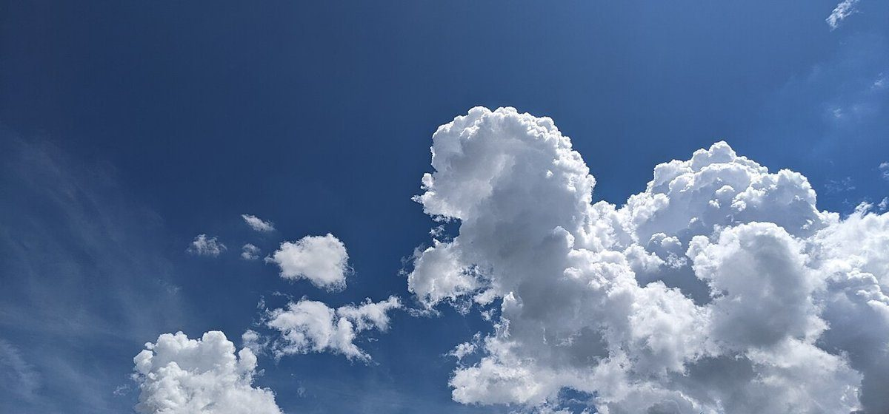
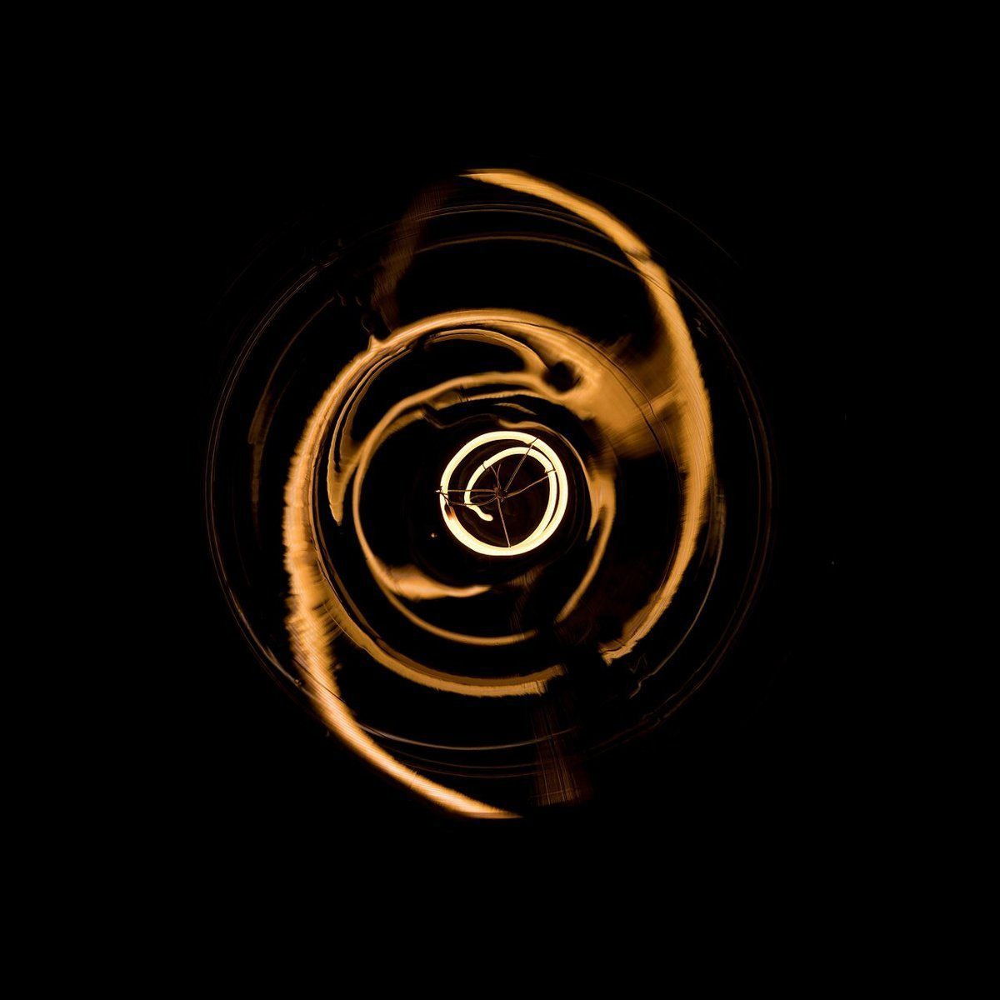

制作側の連想
管制室の交信ログ
屋号の「Space」から宇宙、「かるでら」の響きから「カルデラ」(火山の大きなくぼ地を指す言葉)を連想し、このサイトは月や火口を観測する宇宙船の管制室の「交信ログ」に見立てました。店名の由来や、お店の理念・メニュー・雰囲気とは無関係の、制作側だけの連想です。
観測写真(イメージ)
空と光の記録
写真はお店や天草市のものではありません。テーマに合わせて選んだ、国外・撮影地不明のフリー素材です。



ご案内
確認できている情報
| 所在地 | 〒863-2171 熊本県天草市佐伊津町1426-7 |
|---|---|
| 電話 | なし |
| 営業時間 | 準備中 |
| 定休日 | 準備中 |
| ご予約 | 準備中 |
| 駐車場 | 準備中 |
| SNS | Instagram @space__karudera |